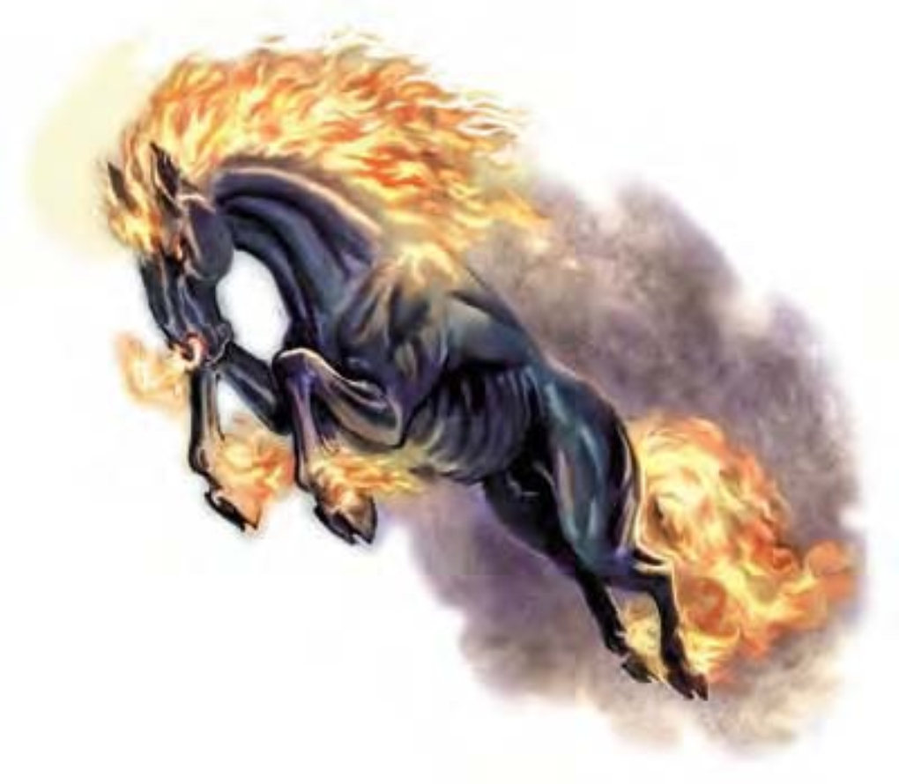

乍看之下他们不过是只巨大强壮的黑马，但近看之后才会发现他们的本质。铁蹄上环着红焰，鼻中喷出闪亮火光，深邃的眼眸中则燃烧着熊熊的怒火。
梦魇是高傲的马形生物，住在黑帝斯域。他们黑心邪恶，一如家乡其他的深渊居民。
梦魇是狂野急躁的生物，横行世上行那邪恶之事，并侵入挡路者的梦中。虽然没有翅膀，但梦魇仍可以高速飞行。他们很少让人骑乘，但传说中曾有异常强大的邪恶生物拿他们当坐骑。
梦魇的大小体重约与战马相同。
| 资料栏位 | 梦魇 (Nightmare) 大型异界生物 (邪恶、外界) |
| 生命骰 | 6d8+16 (45HP) |
| 先攻 | +6 |
| 速度 | 40英尺 (8格)、飞行90英尺 (良好) |
| 防御等级 | 24 (-1体型、+2敏捷、+13天生)、接触11、措手不及22 |
| 基本攻击/擒抱 | +6 / +14 |
| 攻击 | 蹄踏+9近战 (1d8+4附加1d4火焰) |
| 全力攻击 | 2蹄踏+9近战 (1d8+4附加1d4火焰) 及 啮咬+4近战 (1d8+2) |
| 占据/触及 | 10英尺 / 5英尺 |
| 特殊攻击 | 火焰足踏、烟雾 |
| 特殊能力 | 星界投射、黑暗视觉60英尺、同游灵界 |
| 豁免 | 强韧+8、反射+8、意志+6 |
| 属性 | 力量18、敏捷15、体质16、智力13、感知13、魅力12 |
| 技能 | 专注+12、交涉+3、威吓+10、界域知识+10、聆听+12、潜行+11、搜索+10、察言观色+10、侦察+12、生存+10 (在其他界域追踪+12) |
| 专长 | 警觉、精通先攻、健跑 |
| 环境 | 黑帝斯灰色荒域 |
| 组织 | 单独 |
| 宝藏 | 无 |
| 阵营 | 总是中立邪恶 |
| 进化 | 7-10HD (大型)；11-18HD (超大型) |
| 等级修正值 | +4 (部属) |
梦魇会以毒蛇般的尖牙及强有力的后腿踢击应战。梦魇可背负骑师进行攻击，但骑师若未通过“骑术”检定，则无法同时战斗。
在计算伤害减免时，梦魇的天生武器与持有武器都视为邪恶阵营。
火焰足踏 (超自然)：梦魇一踏会让可燃物燃烧。
烟雾 (超自然)：战意高升时，梦魇会激动地猛喷鼻息。鼻息为15英尺的锥状高热硫磺烟雾，可让对手呛咳目盲。锥状区域内的生物均须通过强韧检定 (DC=16)，否则所有攻击检定与伤害掷骰都会受到-2减值，效果持续到离开锥状区域后1d6分钟。喷鼻息为即时动作，只维持1轮，但每轮都可使用1次。豁免检定DC的调整值与体质调整值相同。
梦魇在喷出烟雾后，对5英尺内的生物为隐蔽，10内的生物则为完全隐蔽。但烟雾不会遮住梦魇自身的视野。
星界投射与同游灵界 (超自然)：与同名法术相同 (施法者等级20)，梦魇可随意施展。
负重能力：轻度负荷为300磅、中度负荷301-600磅、重度负荷601-900磅。